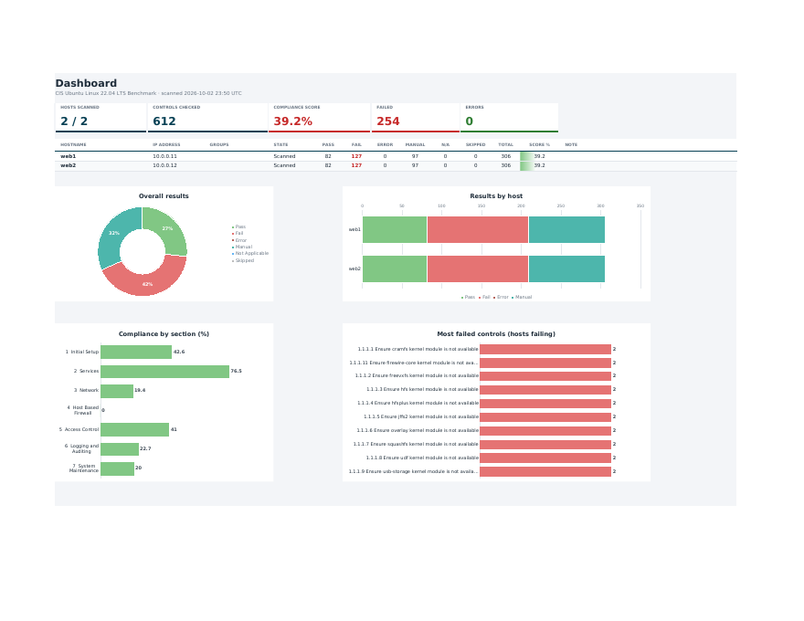
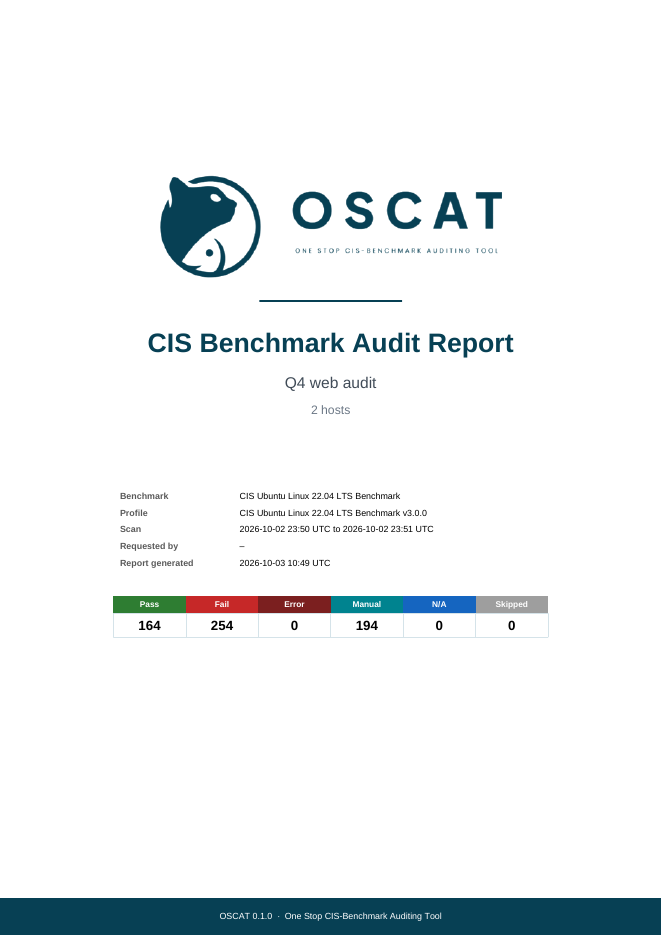

Reports
Every scan can be downloaded as a PDF report, an Excel workbook and a CSV file, for the whole scan or for one host. In the web app the buttons are at the top of the scan page (whole scan) and in the Report column of the host table (one host).
Excel workbook
Three sheets:
| Sheet | Contents |
|---|---|
| Cover | OSCAT logo, report title, benchmark, profile, scan time, and the totals per result state |
| Dashboard | totals (hosts, controls checked, compliance score, failed, errors), a table of hosts with hostname, IP address, groups, state and counts per result, and charts: overall results, results by host, compliance by section, most failed controls |
| Details | one row per control (per host and control for a multi-host scan), in benchmark order |

Controls left out of a scan (see control sets) are still listed, with the status Excluded and the note "Excluded from this audit". They are not counted in the totals, scores or charts.
The Details columns are: (Hostname, IP address when several hosts,) No, Policy, Profile Applicability, Status, Observation, then the rest of the CIS fields in the order the benchmark prints them: Description, Rationale, Impact, Audit, Remediation, Default Value, References. The scan report's Observation holds the audit output; the per-host report gives a short observation per control.
Changing a result in the workbook
A client may accept a setting that differs from CIS, for example a stricter or looser password rule set by their own policy. To record that, pick a new value in the control's Status cell on the Details sheet. The cell is a dropdown of the results (including Excluded), and its colour changes with the value. The totals on the Cover and Dashboard, the host table, the compliance scores and the charts are formulas over the Status column, so they follow the change. The Observation keeps the actual value OSCAT found on the host, so a reader can see what was accepted; add a note there if you want to record why.
PDF report
- A cover page with the logo, title, benchmark and scan facts and the totals.
- Hosts: each host's score and counts (scan report).
- Controls: each control with how many hosts passed, failed or errored and which hosts failed (scan report), or each control's status and a short observation (per-host report).
- Observation: every control with its benchmark text (description, rationale, audit, remediation and the rest), then the result on each host and what its audit commands returned. Long output is shortened; the full evidence stays in OSCAT.
- Following pages carry a small logo, the report title and the page number in the footer.

Status colours are the same everywhere: Pass green, Fail red, Error dark red, Manual teal, N/A blue, Skipped grey.
CSV
One row per host and control: host, address, groups, host state, control, title, status, the reason, and whether the control still needs review. Unreachable hosts get one row with the error. Useful for loading results into another tool.
Text that a spreadsheet would read as a formula (starting with =, +, - or @) gets a
leading apostrophe, so opening the file in Excel never runs anything from a host's output.
From the command line
oscat report results.json --failures # list failed and errored controls
oscat report results.json --xlsx audit.xlsx --pdf audit.pdf --title "Q4 web servers" \
-p profiles/cis-ubuntu-22.04/profile.yaml # -p adds levels and benchmark text
oscat report results.json --host web1 --xlsx web1.xlsx --pdf web1.pdf # one host
oscat report results.json --csv results.csv
Reports made from a profile imported from a CIS PDF contain benchmark text, which CIS licenses: keep them inside your organisation and the client's.